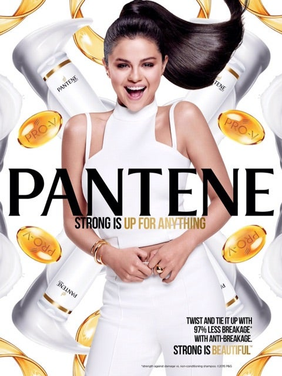

CELEBRITIES NEWS
| celebrities advertising
The Affection of Celebrities in Advertisements
7| Nov | 2023
Whether it is a pop singer promoting soft drinks or a celebrity influencer showcasing products on social media, celebrity advertising is hard to ignore. Celebrities naturally command attention and that includes celebrity endorsement or celebrity branding. Featuring celebrities in advertising can grab attention immediately and enhance a brand, and for that reason it has always been a high-impact marketing tool.
Having a famous person advertise a product can be a powerful tool for marketing. Celebrities promote everything from products to services and even social causes. Celebrities can shine a bright spotlight on all types of businesses, and that's why they are sought out by a wide variety of companies to advertise their products or services. To give it a formal definition, celebrity branding is the use of famous people to generate buzz around a product or service. Celebrity branding involves engagement from celebrities with the product or service. These days, that often translates to generating buzz or engagement with their social networks.